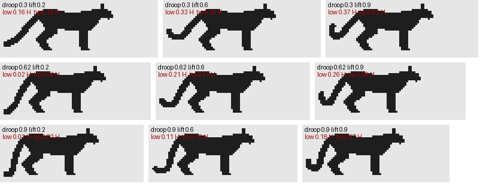

2. Two kinds of leg, and a tail you measure
Back to the tutorial. Code: rig.py (Species, stance_x, leg, the tail in build), paint.value_field.
I forked the elk student's renderer, but not its rig. An elk's leg is a cervid's: a long cannon ending in a hoof, the animal standing on the tip of one toe. Neither of my animals stands like that, and the difference between the two of them is the first thing you see.
- The bear is plantigrade. The whole hind foot, heel to toes, is on the ground, and the forepaw's palm is too, turned in (pigeon-toed). The legs are short thick columns under a deep barrel. Seton: "the plantigrade hind-foot, which is like the foot of man ... the in-toeing of the fore-paws".
- The cougar is digitigrade. It stands on its toes. The hock and wrist are well off the ground, the long metatarsus slopes, and the forearm stands vertical under the elbow.
A leg is a chain, and one angle is the species
A leg in rig.py is: root joint (shoulder or hip) → upper bone → IK joint → lower bone → wrist or ankle → metapodial at an angle the pose sets → digits. The pose gives the ball of the foot and the metapodial's angle from vertical. The wrist or ankle follows from those, and two-bone IK puts the elbow or knee between it and the root:
def leg(sp, pose, name, body_xf):
fore = name[1] == "F"
rx0, rz0, ry0 = sp.fore_root if fore else sp.hind_root
root = body_xf(np.array([rx0, side * ry0, rz0]))
Lu, Ll, Lm, Ld = sp.fore_len if fore else sp.hind_len # upper, lower, metapodial, digits
ru, rl, rm, rp = sp.fore_r if fore else sp.hind_r
kind, *args = pose.legs[name]
R = np.array([root[0], root[2]])
if kind == "ik":
(fx, fz), meta, dig = args
ball = np.array([fx, max(fz, 0.0) + rp * 0.55])
wrist = ball - _vec(meta) * Lm # _vec(a): unit vector a degrees from straight down
joint = ik2(R, wrist, Lu, Ll, bend_forward=not fore) # the elbow points back, the knee forward
toe = ball + _vec(dig) * Ld
...
The stance angle is a number in the species table, and it's the most species-specific number there:
"bear": Species(..., fore_len=(0.30, 0.31, 0.12, 0.06), hind_len=(0.33, 0.31, 0.21, 0.07),
fore_r=(0.13, 0.095, 0.075, 0.07), hind_r=(0.155, 0.095, 0.07, 0.065),
fore_meta=78.0, hind_meta=84.0, ..., toe_in=18.0), # the foot flat on the ground
"cougar": Species(..., fore_len=(0.28, 0.36, 0.10, 0.075), hind_len=(0.30, 0.40, 0.27, 0.08),
fore_r=(0.11, 0.075, 0.05, 0.072), hind_r=(0.17, 0.09, 0.044, 0.062),
fore_meta=14.0, hind_meta=28.0, ...), # on its toes, the hock high

fig. The two rigs standing, side view, in shoulder heights (the grey lines are 0 and 1 H). The metapodial is red. The bear's lies almost flat along the ground; the cougar's hind one slopes 28° from vertical up to a hock at a quarter of the shoulder height, with the calcaneus sticking out behind it. (The bear's foreleg in this figure is its standing pose with the paw placed a touch forward.)
The bear's metapodial at 84° is its heel on the ground. At 28° the cougar's is a cat's sloping foot. Every other difference in the legs follows from those two numbers and the lengths.
Where the paw goes: the bug I found by printing joints
I placed the cougar's paws where my eye said a cat's paws go, a little ahead of the shoulder. On the board (nb025) the forearm leaned forward like a pole propped against a wall. I printed the leg chain in shoulder heights:
LF1 [[0.5, 0.13, 0.8], [0.36, 0.13, 0.48]] # shoulder -> elbow
LF2 [[0.36, 0.13, 0.48], [0.45, 0.13, 0.13]] # elbow -> wrist: 0.09 H forward over 0.35 H
LH2 [[-0.48, 0.13, 0.47], [-0.83, 0.13, 0.28]] # knee -> hock
In a cat the elbow sits behind the shoulder joint, and the forearm hangs vertically from it. So the ball of the forefoot belongs behind the shoulder joint too:
def stance_x(sp, fore):
"""Where the ball of the foot sits under a standing animal (x in H)."""
r = sp.fore_root if fore else sp.hind_root
if sp.name == "bear":
return r[0] + (0.05 if fore else 0.12)
# the cougar stands with its forearms vertical under the shoulder (the elbow is behind the
# shoulder joint) and the hind paw under the hip
return r[0] + (-0.12 if fore else -0.05)
The same printout showed the hind leg too long in the femur, which pushed the hock back and down. The femur went from 0.36 H to 0.30 H.


nb028, nb035. The grey board before and after the joint fix, the femur and the flank fold (below).
Dressing the chain
Each segment becomes a tube with the species' thickness. What matters:
# lower segment: the bear's are hairy columns, the cat's taper to the wrist
ra2 = np.array([rl * 1.1, rl, rm * 1.2]) if bear else np.array([rl * 1.3, rl * 0.92, rm * 1.1])
# the hock point sticks out behind (the calcaneus) -- cat only
hp = P[2] + np.array([-1.0, 0, 0]) * rm * 1.1 + np.array([0, 0, rm * 0.5])
# the paw: a round pad of toes; the bear's turned in
if fore and toe_in:
d4n = np.array([d4n[0] * np.cos(toe_in), -side * np.sin(toe_in) * abs(d4n[0]), d4n[2]])
and one tube that isn't a bone:
if not bear and not fore and kind == "ik":
# the flank fold: in a cat the skin runs from the belly to the stifle, so the belly line
# flows into the knee and the thigh reads as one mass with the body (no notch)
bx = body_xf(np.array([sp.hind_root[0] + 0.22, side * 0.1, 0.63]))
kj = P[1] + np.array([0.02, 0, 0.03])
out.append(tube_from_points(name + "fl", np.array([bx, bx * 0.5 + kj * 0.5, kj]), ...))
Thickness was the critic's catch, not mine. Round 1 said the cougar's legs were spindly: "Seton draws thick forearms and paws wider than the wrist." Looking back at plate XII, he does. The cat's radii went up: forearm 0.07 → 0.075 H, metacarpal 0.04 → 0.05, paw 0.055 → 0.072 (about 30% on the paw), hind shank and paw likewise.
The internal masses drew seams. The scapulae, upper arms, thighs and flank fold are separate tubes inside the body outline. Each one's shading turned away from the light at its own edge and drew a dark line across the body: "armour plates", the critic said. They're allowed to model the surface, but not to draw their terminators:
# masses that sit inside the body (scapulae, upper arms, thighs, the flank fold) model the
# surface but must not draw their own terminators as seams across it (the critic: "armour plates")
sh_parts = [i for i, t in enumerate(tubes) if t.name.startswith("shoulder") or t.name[2:] in ("1", "fl")]
sb = np.isin(R.part, sh_parts)
x[sb] = np.maximum(x[sb], np.minimum(3.0, x[sb] + 1.6))
The bear had its own version: its scapula tube poked above the back line and gave it two humps. A hump is a grizzly's mark, the one thing a black bear must not have. I lowered the scapula top from 0.96 H to 0.84 H, and the back became one dome with the rump highest.
The cougar's tail: a chain you tune by numbers
The naturalist: "The tail is the giveaway: very long (about half the body length), thick, carried low with an upward curl at the tip. No other Washington animal has that tail." At 6-12 px it's most of what says "cougar". I got it wrong three times, and only stopped getting it wrong when I stopped judging it by eye.
It's a 14-station chain from the croup. Each station's direction is an angle measured from horizontal-backward. It starts at a root angle a, falls toward straight down by droop over the first 65%, then curls back and up by lift over the last 36%:
root_ang, droop, lift = pose.tail
a = root_ang + pose.pitch * 0.5
for i in range(1, n):
u = i / (n - 1)
ang = a + (-90 - a) * droop * min(u / 0.65, 1.0) + 190 * lift * max(0, (u - 0.64) / 0.36) ** 1.0
step = np.array([-np.cos(np.radians(ang)) * np.cos(sw * u), np.cos(np.radians(ang)) * np.sin(sw * u),
np.sin(np.radians(ang))])
d = d + step * Lt / (n - 1)
My first version fell to the ground and pooled (nb020). The second rose too steeply. The critic's round 1 described the third: "a rope to the ground, with the black tip lying flat like a hoof. Real: the lowest point 0.15-0.2 H up, the last ~15% curling up." That gave me two numbers to hit, so I printed them for every candidate:
droop 0.3 lift 0.2 lowest 0.16 H tip 0.16 H
droop 0.3 lift 0.6 lowest 0.33 H tip 0.49 H
droop 0.3 lift 0.9 lowest 0.37 H tip 0.62 H
droop 0.62 lift 0.2 lowest 0.02 H tip 0.02 H <- the rope on the ground
droop 0.62 lift 0.6 lowest 0.21 H tip 0.31 H <- chosen for standing
droop 0.62 lift 0.9 lowest 0.26 H tip 0.48 H
droop 0.9 lift 0.2 lowest 0.02 H tip 0.02 H
droop 0.9 lift 0.6 lowest 0.11 H tip 0.16 H
droop 0.9 lift 0.9 lowest 0.18 H tip 0.37 H

fig. The same sweep as silhouettes at 40 px (rows: droop 0.3, 0.62, 0.9; columns: lift 0.2, 0.6, 0.9; root angle −38°). Top left is a lynx's stub read as a stick; the middle row, middle column is the cougar.
Every pose then carries its own tail as a tuple (root angle, droop, lift), checked the same way:
p.tail = (-38, 0.62, 0.6) # stand: lowest 0.21 H, tip 0.31 H
p.tail = (-40, 0.62, 0.62) # alert
p.tail = (-34, 0.6, 0.55) # walk (with a 12 deg lateral swing through the stride)
p.tail = (-22, 0.5, 0.55) # stalk: the tail low and out behind
p.tail = (-25, 0.75, 0.3) # crouch: laid along the ground, the tip still up
Two more tail fixes came from outside. Critic 2 said it was still a thin rope, so the radius went from 0.034 to 0.05 H, with the last three stations bushier. Muybridge's galloping cat (plate 720) streams its tail back rather than holding it high (how-to 3).
Where it stops
- Tubes aren't muscles. At 60 px Seton's cougar is a shoulder mass, a rib cage, a huge thigh and loose flank skin, each with its own plane. Mine is a lofted torso with a few masses inside it, shaded as one smooth form. The elk student hit the same wall and proposed the same fix: model the masses separately and give each its own lit plane.
- The bear's forefoot is plantigrade in stance only. The walk flips the palm up in the swing, as bears do, but the toe-in only reads from above or in front, and those views are the rig's weakest (sheet C).
- The final gallop at phase 0.4 still throws the tail up at about 45° (sheet A2). The gallop's pitch and flex add to the root angle, and I didn't print that pose's tail height.